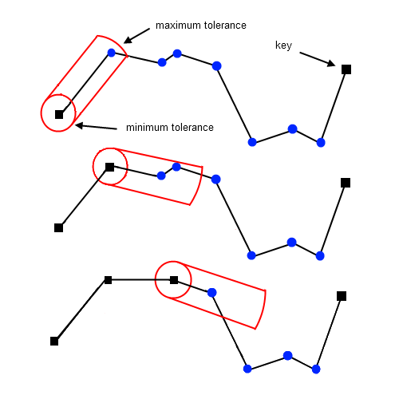
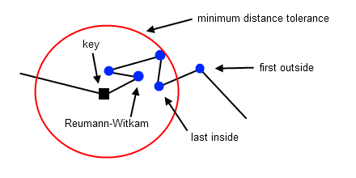

Opheim
The O(n) Opheim routine is very similar to the Reumann-Witkam routine, and can be seen as a constrained version of that Reumann-Witkam routine. Opheim uses both a minimum and a maximum distance tolerance to constrain the search area. For each successive vertex vi, its radial distance to the current key vkey (initially v0) is calculated. The last point within the minimum distance tolerance is used to define a ray R (vkey, vi). If no such vi exists, the ray is defined as R(vkey, vkey+1). For each successive vertex vj beyond vi its perpendicular distance to the ray R is calculated. A new key is found at vj-1, when this distance exceeds the minimum tolerance Or when the radial distance between vj and the vkey exceeds the maximum tolerance. After a new key is found, the process repeats itself.

The Opheim simplification process is illustrated above. Notice how the search area is constrained by a minimum and a maximum tolerance. As a result, during the second step, only a single point is removed. The Reumann-Witkam routine, which uses an infinite or unconstrained search area, would have removed two points.
Interface
template <unsigned DIM, class InputIterator, class OutputIterator>
OutputIterator simplify_opheim (
InputIterator begin,
InputIterator end,
typename std::iterator_traits <InputIterator>::value_type minTol,
typename std::iterator_traits <InputIterator>::value_type maxTol,
OutputIterator result)
Applies the Opheim routine to the range
[first, last) using the specified distance tolerances
minTol and maxTol. The resulting simplified polyline
is copied to the output range [result, result + m * DIM), where
m is the number of vertices of the simplified polyline. The return
value is the end of the output range: result + m * DIM.
Input (Type) Requirements
DIMis not zero, whereDIMrepresents the dimension of the polyline- The
InputIteratorvalue type is convertible to the value type of theOutputIterator - The range
[first, last)contains vertex coordinates in multiples ofDIM, e.g.: x, y, z, x, y, z, x, y, z whenDIM= 3 - The range
[first, last)contains at least 3 vertices minTolis not zeromaxTolis not zero
In case these requirements are not met, compile errors may occur, or
the entire input range [first, last) is copied to the output range
[result, result + (last - first)).
Implementation Details
All the articles that I found mentioning or discussing the Opheim algorithm, failed to explain how to define the ray that controls the direction of the search area. As far as I can tell, there are three possible ways of determining this ray R(vkey, vi), where vkey is the current key.
- The Reumann-Witkam way: i = key + 1
- The first point outside: key < i and vi is the first point that falls outside the minimum radial distance tolerance
- The last point inside: key < i and vi is the last point that falls inside the minimum radial distance tolerance; if no such vi exists, fall back to the Reumann-Witkam way

I compared these three approaches using postitional error statistics and found that 'the first point outside' approach, most of the time, produces slightly better results than the 'Reumann-Witkam' approach. Furthermore, there did not seem to be any real difference between the 'last point inside' and 'the first point outside' approaches. I ended up choosing 'last point inside' approach, because it was a better fit for the loop that I had already implemented.
Usage
float minimum = 10.f; // minimum distance tolerance
float maximum = 100.f; // maximum distance tolerance
std::vector <double> polyline; // original polyline, assume not empty
std::vector <double> result; // resulting simplified polyline
// simplify the 4d polyline
psimpl::simplify_opheim <4> (
polyline.begin (), polyline.end (),
minimum, maximum, std::back_inserter (result));